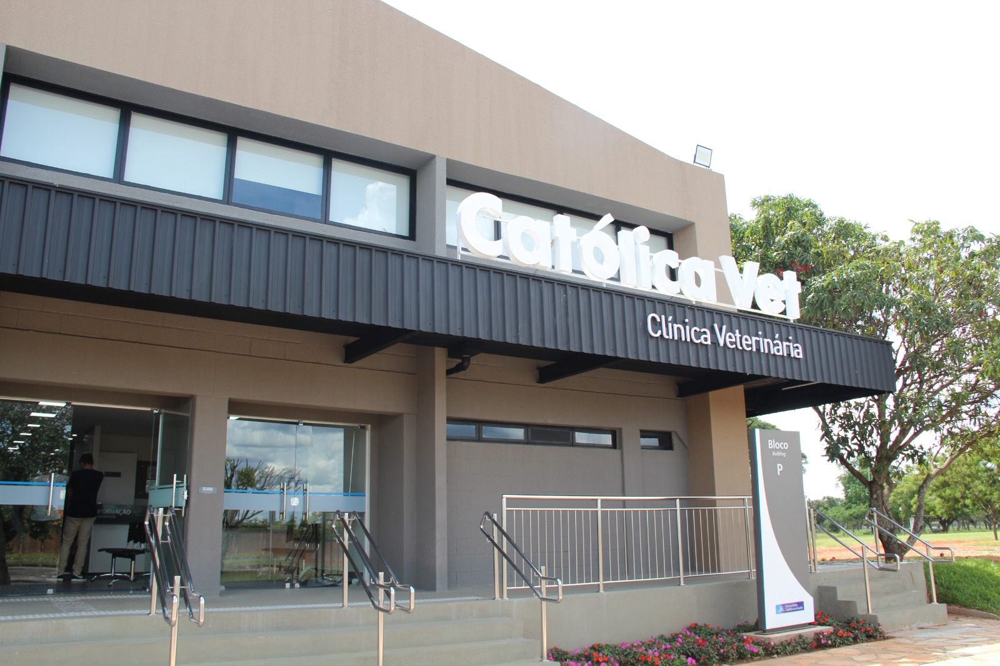

DESCRIÇÃO
A Clínica-Escola do curso de Medicina Veterinária da Universidade Católica de Brasília iniciou os atendimentos à comunidade há dois anos. Com estrutura moderna e equipamentos de última geração, a CatólicaVET está preparada para atender cães, gatos e pets não convencionais como coelhos, porquinho da índia, aves e hamsters.
SALAS E DEPARTAMENTOS
HORÁRIO DE FUNCIONAMENTO
- Segunda a sexta das 8h às 21h (exceto feriados e fins de semana)